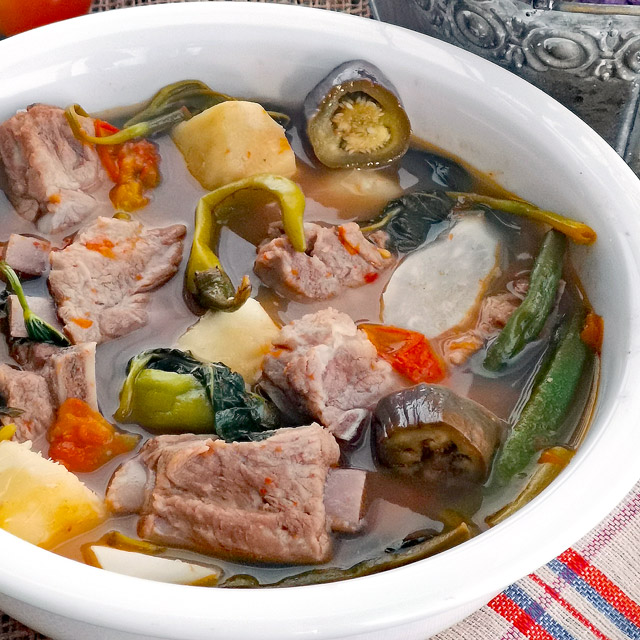

This is a Filipino dish meant to challenge your palate - if you love sour-flavored meals and soup dishes, then this might suit your taste buds.
Back to Home page
Sinigang is a sour soup native to the Philippines. This recipe uses pork as the main ingredient. Other proteins and seafood can also be used. Beef, shrimp, fish are commonly used to cook sinigang.
The chicken version, on the other hand, is called sinampalukang manok. I prefer to use either pork belly or buto-buto when cooking sinigang. The latter refers to cuts with bones intact. These are either pork neck bones, chopped spare ribs, and chopped baby back ribs. Pork shoulder and ham can also be used when cooking sinigang.